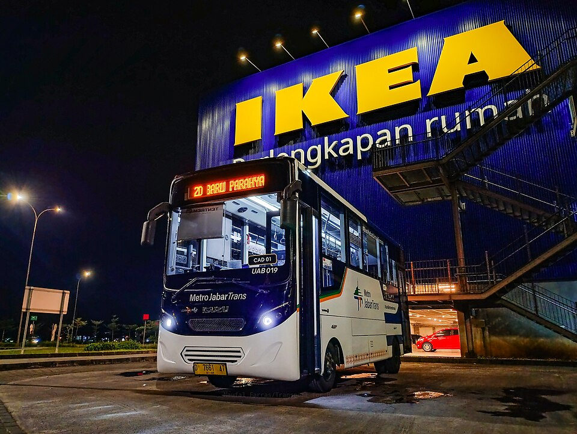
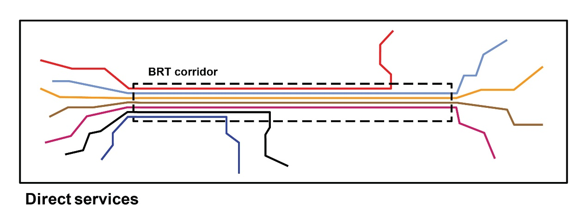
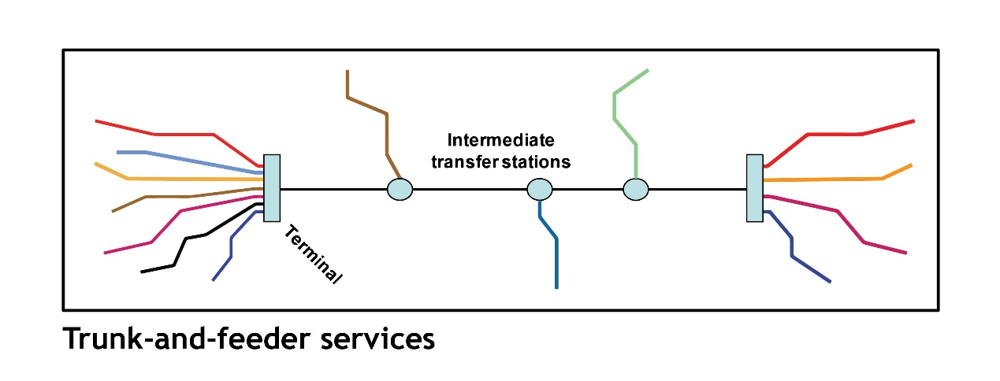

Mengenal Proyek BRT Bandung Raya
Transport for Bandung • 19 Desember 2024
BRT Bandung Raya di depan mata. Program ini digadang-gadang akan mengatasi masalah mobilitas warga Bandung Raya yang selama ini menjadi hangat diperbincangkan. Dalam blog ini, Transport for Bandung merangkum informasi mengenai proyek BRT Bandung Raya yang didapatkan dari pemangku kepentingan terkait dan telah mendapatkan persetujuan untuk disebarkan. Informasi yang disajikan berasal dari update perencanaan BRT Bandung Raya per tahun 2024 dan dapat berubah.
Metro Jabar Trans Koridor 2 di IKEA Kota Baru Parahyangan.
Tentang BRT Bandung Raya
BRT Bandung Raya merupakan bagian dari program Indonesia Mass Transit (MASTRAN). Program ini diinisiasi oleh Kementerian Perhubungan dengan proyek bus raya terpadu (BRT) di Kawasan Metropolitan Cekungan Bandung (Bandung Basin Metropolitan Area, BBMA) dan Kawasan Metropolitan Medan Binjai Deli Derdang (Mebidang). Program ini menggunakan pendanaan dari pinjaman Bank Dunia dengan nominal total US$224 juta, sekitar Rp1,3 triliun di antaranya untuk pengembahan BRT di Bandung Raya.
Dalam cakupan program ini, Bandung akan mendapatkan bantuan infrastruktur jalur khusus (koridor) BRT beserta sebagian besar fasilitas halte di luar koridor (off-corridor). Selain itu, pendanaan dari Bank Dunia juga akan digunakan untuk mengembangkan sektor kelembagaan dalam mengoperasikan BRT. Sebanyak 21 rute bus dengan skema direct service menuju penjuru Bandung Raya akan memanfaatkan infrastruktur tersebut.
Proses penyusunan detail engineering design (DED) telah dimulai sejak 2023, dilakukan oleh konsultan Dohwa Engineering dari Korea Selatan dan Lenggogeni Planning Designing & Consulting dari Indonesia. Berdasarkan informasi pada pertengahan 2024, proses penyusunan DED telah selesai dan sedang dilakukan proses finalisasi. Tahap selanjutnya ialah lelang kontraktor untuk pekerjaan konstruksi.
Seperti apa konsep BRT Bandung Raya nantinya?
Istilah koridor dalam sistem BRT Bandung Raya merujuk pada jalur khusus bus, baik berupa jalur yang hanya dapat dilalui bus (dedicated) maupun jalur yang mengutamakan lalu lintas bus, tetapi berbagi jalan dengan kendaraan lain (mixed). Sementara itu, istilah rute merujuk pada jalur yang dilayani oleh bus. Halte yang dilayani oleh rute BRT Bandung Raya tidak terbatas hanya dalam koridor. Sebagai contoh, rute BRT dari Cimahi ke Cicaheum akan melayani halte di luar koridor (off-corridor) dari Cimahi hingga Batas Kota (Elang), masuk ke koridor BRT di Batas Kota hingga Cicadas, kemudian kembali melanjutkan perjalanan ke Cicaheum di luar koridor BRT.
Pola layanan seperti ini disebut sebagai direct service, yakni rute bus dapat memulai perjalanan dari luar koridor, kemudian masuk ke dalam koridor sebelum melanjutkan perjalanan kembali ke luar koridor atau mengakhiri perjalanan di dalam koridor. Hal ini berkebalikan dengan pola trunk and feeder, yakni bus BRT hanya melayani halte di dalam koridor, dengan bus pengumpan di luar koridornya. Pola direct service telah berhasil diterapkan di Guangzhou, Tiongkok. Menurut artikel yang dipublikasikan oleh ITDP pada 2012, BRT di Guangzhou memiliki frekuensi kedatangan bus yang jauh lebih tinggi dibandingkan Transjakarta yang saat itu mengusung pola trunk and feeder.
Pola operasi direct service. Rute bus dapat keluar masuk koridor BRT. (Sumber: ITDP)
Pola operasi trunk and feeder. Rute bus BRT (trunk) hanya melayani halte di dalam koridor BRT. Penumpang dari luar koridor BRT diumpan menggunakan bus pengumpan (feeder) yang tidak masuk ke dalam koridor BRT (Sumber: ITDP)
Koridor BRT akan dibangun dari Batas Kota hingga Cicadas untuk koridor barat-timur dan Banceuy hingga Tegallega untuk koridor utara-selatan. Sepanjang koridor BRT, akan dilakukan penataan ruas jalan, persimpangan, halte, dan fasilitas pejalan kaki. Terdapat 34 halte yang akan dibangun di dalam koridor (on-corridor). Nama-nama halte masih akan ditentukan kemudian.
Tanggung jawab pemerintah daerah
Sebagaimana yang telah diketahui sebelumnya, perencanaan dan pembangunan BRT Bandung Raya menjadi tugas Kemenhub. Pembiayaan senilai 224 juta dollar AS (Rp3,13 Triliun) untuk program Indonesia Mass Transit Project (MASTRAN) yang didapatkan dari Bank Dunia akan digunakan untuk membangun infrastruktur BRT di Mebidangro (Medan) dan Cekungan Bandung, serta meningkatkan kapasitas kelembagaannya. Selebihnya merupakan tanggung jawab Pemerintah Daerah.
Berdasarkan Peraturan Pemerintah Nomor 74 Tahun 2014, dijelaskan bahwa penyediaan transportasi publik merupakan tanggung jawab pemerintah daerah. Oleh karena itu, operasional harian, penyediaan bus, dan pemberian subsidi nantinya merupakan tanggung jawab Pemerintah Daerah. Pihak yang bertanggung jawab untuk memimpin program ini dari sisi pemda adalah Pemerintah Provinsi Jawa Barat melalui Dinas Perhubungan Jawa Barat.
Meskipun demikian, pemerintah provinsi bukanlah satu-satunya yang bertanggung jawab. Pemerintah di lima kabupaten dan kota di Bandung Raya juga harus merasa memiliki dan mendukung layanan ini. Dukungan yang harus diberikan meliputi “patungan” subsidi dan jaminan kelancaran operasional BRT di wilayahnya.
Bagaimana dengan angkutan eksisting?
Dalam beberapa tahun terakhir, seringkali muncul resistensi dari layanan eksisting ketika pemerintah mengoperasikan layanan baru. Sebagian dari mereka beralasan “tidak dilibatkan dalam perencanaan” dan “mengurangi pemasukan.” Pemerintah daerah harus melakukan pendekatan dan sosialisasi intensif dengan angkutan eksisting yang menjadi lingkup kerjanya supaya hal seperti ini tidak terulang kembali.
Mengondisikan angkutan eksisting bukan berarti harus mencabut izin trayek atau melarang mereka bekerja. Opsi yang telah terbukti berhasil ialah rerouting dan peremajaan. Trayek angkutan yang berhimpitan dengan rute BRT dapat dialihkan untuk melayani wilayah yang tidak terjangkau sekaligus berfungsi sebagai pengumpan (feeder). Pemda juga harus berani mengucurkan anggaran lebih untuk membantu meremajakan armada angkutan eksisting yang kondisinya sudah tidak layak.
Tidak hanya "yang penting jalan"
Salah satu tujuan dibangunnya BRT Bandung Raya adalah untuk memindahkan mobilitas masyarakat dari kendaraan pribadi ke transportasi umum. Oleh karena itu, peran pemerintah daerah tidak selesai hanya ketika bus berjalan. Pemerintah daerah juga harus melakukan push strategy untuk mendorong masyarakat menggunakan transportasi umum, seperti pembatasan kendaraan pribadi dan pengaturan ruang parkir.
Jadi, BRT Bandung Raya bukanlah proyek yang sepenuhnya dilayani oleh pemerintah pusat. Peran pemerintah daerah justru lebih besar untuk keberlangsungan layanan BRT ke depannya. Pemda tidak bisa bersikap “tahu beres”. Pemda harus merasa bahwa layanan BRT ini adalah miliknya dan berkomitmen untuk menjamin keberlanjutan program ini. Kementerian Perhubungan hanya bertindak sebagai katalisator. Kementerian Perhubungan hanya akan hadir hingga konstruksi fisik infrastruktur on-corridor BRT selesai. Selepas itu, tanggung jawab operasional dilepaskan ke Pemerintah Provinsi Jawa Barat secara penuh.
Rumit bukan? Hadirnya BRT Bandung Raya ini bergantung pada dukungan dari banyak pihak. Oleh karena itu, masyarakat harus berperan dalam mengawal proses-proses ini supaya dapat berjalan semestinya. Sekian yang dapat kami bagikan ke wargi. Semoga bisa menjawab pertanyaan-pertanyaan wargi, meskipun sebenarnya banyak detail yang masih belum terjawab, tetapi seperti itulah yang bisa kami bagikan. Bagaimana wujud sesungguhnya dari BRT Bandung Raya, hanya kita bisa lihat nanti saat sudah berjalan. Terus #KawalBRT